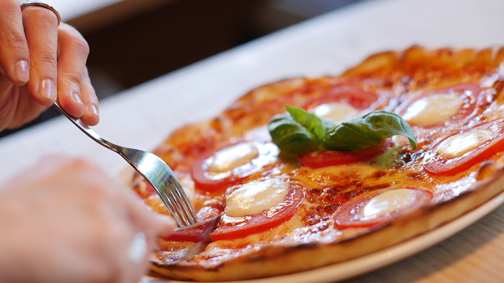

Classic Favourite
Margherita Pizza
A simple and delicious pizza with a crisp base, tomato sauce, mozzarella cheese, and fresh basil.
Ingredients
- 1 ready-made pizza base (8 inch)
- 1/2 cup tomato sauce
- 1 cup grated mozzarella cheese
- 1 small tomato, sliced
- 4-5 fresh basil leaves
- 1 tablespoon olive oil
- 1/2 teaspoon dried oregano
- Salt and pepper to taste
Preparation Steps
- Preheat the oven to 220°C (425°F).
- Place the pizza base on a baking tray and spread the tomato sauce evenly.
- Sprinkle the mozzarella cheese over the sauce.
- Add the tomato slices, basil leaves, oregano, salt, and pepper.
- Drizzle with olive oil and bake for 12-15 minutes until golden.
- Slice and serve hot.